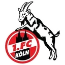

Унион Берлин — РБ Лейпциг итог матча 21 ноября
Статистика матча
- 13Удары32
- 8Удары в створ10
- 33 %Владение мячом67 %
- 4Угловые8
Данные ESPN.
- ТурнирБундеслига
Коротко о матче
Унион Берлин — РБ Лейпциг 1:5: гости победили.
По форме разница была заметной: в пяти последних матчах РБ Лейпциг — 3 победы, Унион Берлин — 1 победа. Слабое место — оборона: РБ Лейпциг — в среднем 1,8 пропущенного мяча за игру в этих пяти матчах.
Стоит учесть и площадку: дома Унион Берлин — 1 победа в 5 матчах, на выезде РБ Лейпциг — 1 победа в 6. До этого команды встречались 24 апреля 2026 года: РБ Лейпциг — Унион Берлин 3:1.
Отдых и расписание
У хозяев 12 дней отдыха, у гостей 14 дней отдыха.
Унион Берлинхозяева
- 12дней отдыха
- 1матч за 7 днейвключая этот
- 1-йдомашний матч подряд
- 7дней до следующегоМайнц
Прошлый матч: 08.11, Фрайбург — Унион Берлин 2:0
РБ Лейпциггости
- 14дней отдыха
- 1матч за 7 днейвключая этот
- 1-йвыездной матч подряд
- 3дня до следующегоЛига чемпионов: Ланс
Прошлый матч: 07.11, РБ Лейпциг — Аугсбург 5:2
Отдых считаем от начала прошлого матча. Еврокубок через 3–4 дня после матча — частая причина ротации.
Форма: последние матчи
Унион Берлин 1 победа из 5
- В1:0
 Н0:0
Н0:0 Н1:1
Н1:1
Н1:1 П0:2
П0:2
РБ Лейпциг 3 победы из 5
 П1:4
П1:4- В4:0
 В2:0
В2:0 П2:3
П2:3- В5:2
Кто в форме
Больше всего голов и передач в последних матчах команды (все турниры).
Унион Берлинза 5 последних матчей
| Игрок | Г | П | Г+П |
|---|---|---|---|
| Яник Хаберер | 2 | 0 | 2 |
| Бурджу, Ливан | 1 | 0 | 1 |
| Скарке, Тим | 0 | 1 | 1 |
РБ Лейпцигза 5 последних матчей
| Игрок | Г | П | Г+П |
|---|---|---|---|
| Антонио Нуса | 2 | 4 | 6 |
| Ромуло Кардозо | 4 | 0 | 4 |
| Браян Груда | 0 | 4 | 4 |
| Кристоф Баумгартнер | 2 | 1 | 3 |
| Кристофер Нкунку | 1 | 2 | 3 |
Дома и в гостях
Хозяева — в своих домашних матчах, гости — в выездных. Чемпионат этого сезона.
| Унион Берлиндома | РБ Лейпцигв гостях | |
|---|---|---|
| Матчей | 5 | 4 |
| Побед | 1 из 5 | 1 из 4 |
| Ничьих | 3 | 0 |
| Забивают за игру | 1,2 | 1,0 |
| Пропускают за игру | 1,4 | 2,8 |
| Тотал больше 2,5 | 40% | 50% |
| Обе забили | 60% | 50% |
| «Сухих» матчей | 40% | 25% |
Жирным — лучшее из двух.
Личные встречи
- РБ Лейпциг3:1Унион Берлин
- Унион Берлин3:1РБ Лейпциг
Положение в таблице
| Команда | Место | И | В | Н | П | Голы | Очки |
|---|---|---|---|---|---|---|---|
| Унион Берлин | 17 | 10 | 1 | 4 | 5 | 8:26 | 7 |
| РБ Лейпциг | 4 | 10 | 7 | 0 | 3 | 32:14 | 21 |
Куда дальше
Материалы носят информационный характер и не гарантируют результат. Реклама букмекеров на сайте не размещается. Сайт только для совершеннолетних (18+).